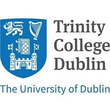

Dundalk Institute Of Technology
DkIT is the focal point for higher education and research on the Belfast-Dublin corridor, serving the North Leinster, South Ulster region. Students and graduates are an important asset to this region and success is vital to its continued economic, social and cultural growth.
Limerick Institute Of Technology

Limerick Institute of Technology is home to over 6,500 students across vibrant campuses in Limerick city, Thurles, Clonmel and Ennis, offering lively and enjoyable student experiences. We are also currently developing a new state of the art engineering focussed campus at Coonagh in Limerick.
Maynooth University
Maynooth University is a thriving research enterprise, a vibrant and exciting place to learn, and importantly, is a university that places equal value on research and teaching.Maynooth engaged university with extensive research and teaching partnerships with enterprise, public bodies, civil society and community organisations.
Trinity College Dublin

Trinity College Dublin, the University of Dublin they provide a liberal environment where independence of thought is highly valued and all are encouraged to achieve their potential. Promoting a diverse, interdisciplinary, inclusive environment which nurtures ground-breaking research, innovation, and creativity through engaging with issues of global significance.
University College Dublin

UCD is one of Europe's leading research-intensive universities; an environment where undergraduate education, masters and PhD training, research, innovation and community engagement form a dynamic spectrum of activity